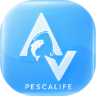

PescaLife — Val di Cecina
La tua guida alla pesca sportiva in Toscana
PescaLife è un sito amatoriale a scopo esclusivamente informativo, non ufficiale e senza scopo di lucro. Le informazioni possono essere incomplete o non aggiornate. Rispetta sempre la legge e verifica le regole sulle fonti ufficiali prima di pescare.
Note legali e privacy
La tua guida alla pesca sportiva in Toscana
Gare, raduni e manifestazioni dedicate alla pesca: uno spazio per scoprire le iniziative del territorio.
Al momento non sono presenti appuntamenti pubblicati. Torna a trovarci per scoprire le prossime iniziative.
L’archivio è ancora vuoto: qui troverai gli eventi conclusi quando saranno disponibili.
Organizzi un’iniziativa di pesca? Inviaci una proposta: sarà valutata e non verrà pubblicata automaticamente.
I dati del referente servono a gestire la proposta e a ricontattare l’organizzatore. L’invio avviene tramite Web3Forms.